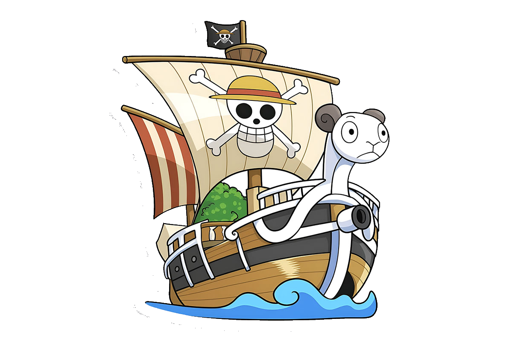

Le jeu One Piece du jour. 7 défis, un seul cap : devine les personnages mystères.
Classique · Wanted · Pavillon · Fruit du Démon · Émoji · Opening · Tome
⚓ Jouer maintenant ▾
Un nouveau personnage mystère par mode, renouvelé chaque jour à minuit (heure de Paris).
Devine le personnage en comparant équipage, origine, prime, Haki et plus encore.
Un avis de recherche flouté se dévoile peu à peu. Identifie le pirate avant la fin.
Reconnais le Jolly Roger case par case. À quel équipage appartient ce drapeau ?
Indices sur le type, le pouvoir et l'utilisateur : trouve le Fruit du jour.
Une suite d'émojis décrit un personnage. Décrypte le rébus pour le démasquer.
Écoute un extrait d'opening de l'anime et retrouve de quel générique il s'agit.
Une couverture de tome se dézoome peu à peu. Retrouve de quel volume il s'agit.
Chaque partie nourrit ta propre aventure de pirate : explore, progresse et arbore tes couleurs.
Explore 32 îles à leurs vraies positions et remplis ton carnet de capture : chaque personnage trouvé en jeu se débloque sur la carte.
Tes points se cumulent jour après jour et te font gravir les rangs, de simple Moussaillon jusqu'à Empereur des mers.
Un pavillon pirate généré rien que pour toi, unique à ton parcours — affiché dans tes stats et sur tes images de partage.
Simple comme une boussole : suis le cap.
Sept défis t'attendent, du Classique au Tome.
Chaque tentative révèle des indices pour t'orienter.
Vert, orange, flèches : analyse et resserre l'étau.
De nouveaux mystères chaque jour. Garde ta série !
Des milliers de pirates lèvent l'ancre chaque jour.